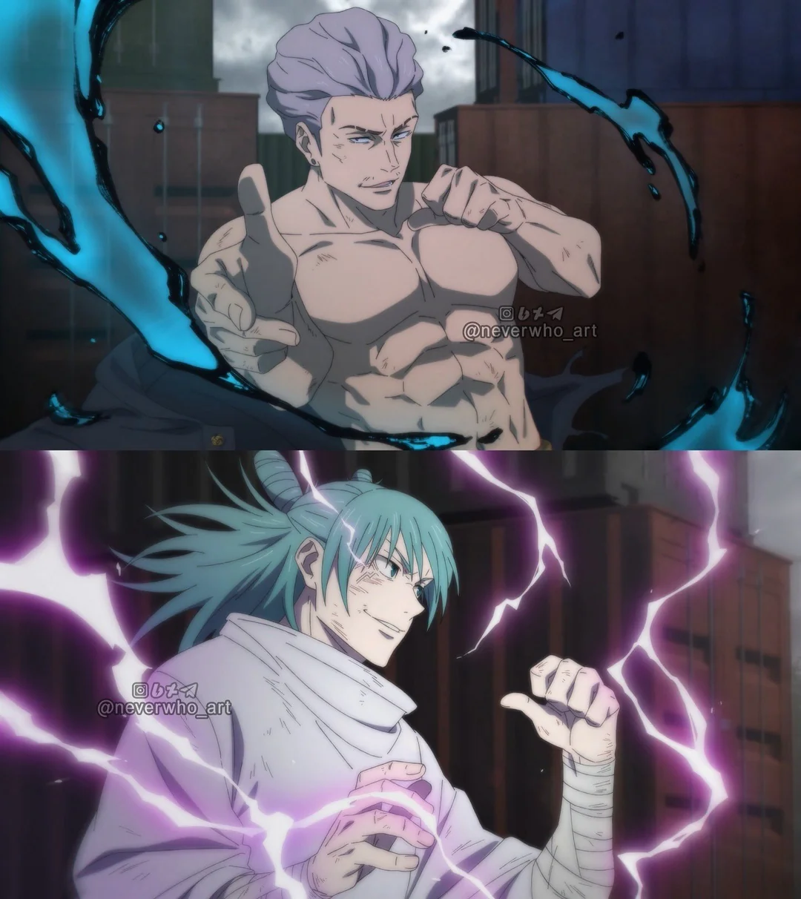

Experiência de Alto Risco
Relatório de operação contra usuário de energia elétrica
Resumo da Operação
Durante esta operação, o profissional Kinji Hakari enfrentou um indivíduo com capacidade ofensiva baseada em energia elétrica de alta intensidade. O cenário apresentou risco extremo, baixa previsibilidade e alta chance de falha imediata.
Ainda assim, o profissional optou por manter sua abordagem padrão: insistência contínua, tomada de decisões duvidosas e confiança elevada em resultados improváveis.
Dados da Experiência
| Oponente | Nível de Ameaça | Estratégia | Resultado |
|---|---|---|---|
| Hajime Kashimo | Extremamente Alto | Persistência + Sorte absurda | Sobrevivência com vantagens questionáveis |
Análise Estratégica
A estratégia aplicada não seguiu padrões tradicionais de eficiência ou planejamento. Em vez disso, foi baseada em resistência prolongada e aproveitamento de oportunidades inesperadas.
O profissional demonstrou alta tolerância a dano, baixa preocupação com riscos e uma capacidade incomum de continuar operando mesmo em condições claramente desfavoráveis.
"Mesmo sob risco extremo, o desempenho se manteve... surpreendentemente funcional."
Registro Visual

Análise Visual da Operação
Voltar para o vídeo
Conclusão
A operação pode ser considerada bem-sucedida, apesar da ausência de um plano sólido e da execução baseada majoritariamente em tentativa e erro.
O profissional reafirma seu estilo de atuação: baixo comprometimento com métodos tradicionais e alta dependência de fatores imprevisíveis.
← Retornar ao perfil profissional ```